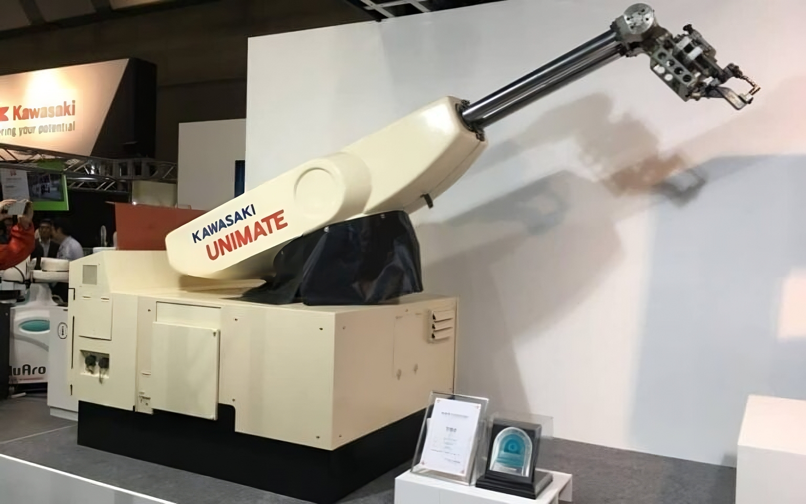

Historia de la Robótica
Un viaje desde los autómatas de la antigüedad hasta la revolución tecnológica actual
Introducción
La robótica es una disciplina que combina ingeniería, informática, mecánica y electrónica. Se centra en el diseño, construcción y operación de robots, máquinas diseñadas para realizar tareas que normalmente requieren intervención humana.
Evolución Histórica
Desde la Antigua Grecia, con la invención de autómatas, hasta la actualidad, la robótica ha evolucionado significativamente. En el siglo XX, figuras como Isaac Asimov y empresas como General Motors contribuyeron a los avances en robots industriales y conceptuales.
Eventos Clave en la Historia de la Robótica
- 1942: Isaac Asimov introduce las "Tres Leyes de la Robótica".
- 1961: El robot industrial Unimate es el primero en ser utilizado en una línea de producción.
- 1980-2000: Desarrollo de robots autónomos y colaborativos.



Reflexión Final
La robótica continúa transformándose y expandiéndose, y su historia está marcada por un constante avance tecnológico que promete un futuro lleno de innovaciones.